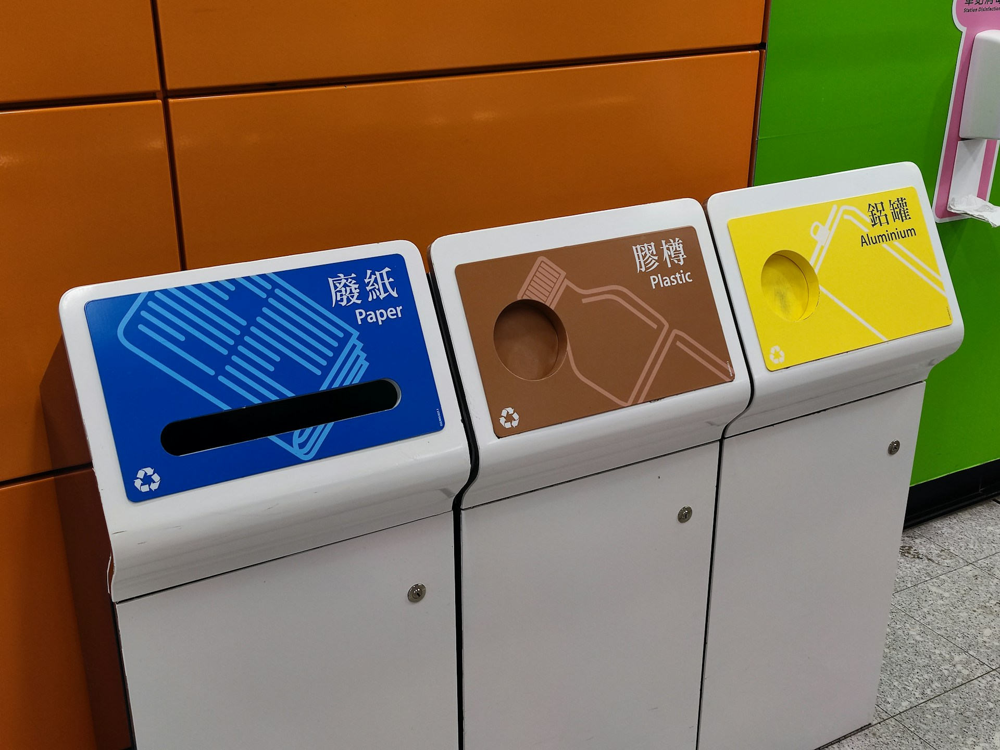

General Recycling Tips
Here are some useful tips to help you recycle better:
-  Sort recyclables according to local guidelines.
-
 Rinse containers to remove any leftover food or liquid.
Rinse containers to remove any leftover food or liquid.
-
 Avoid recycling items that contain contaminants or non-recyclable materials.
Avoid recycling items that contain contaminants or non-recyclable materials.
Recycling Tracker
Track your recycling habits and see the impact you're making.